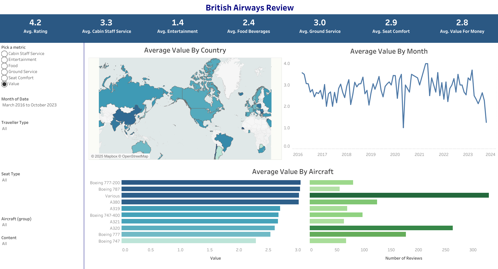
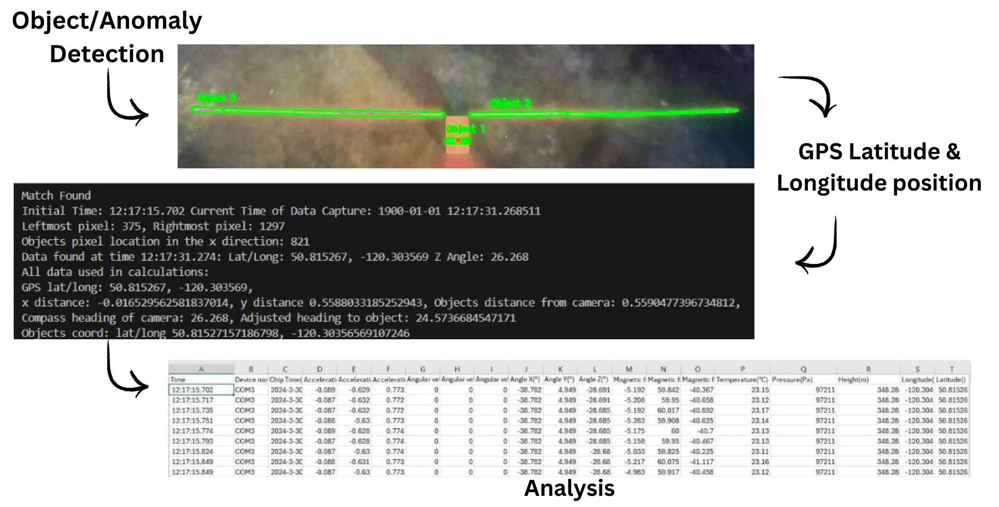
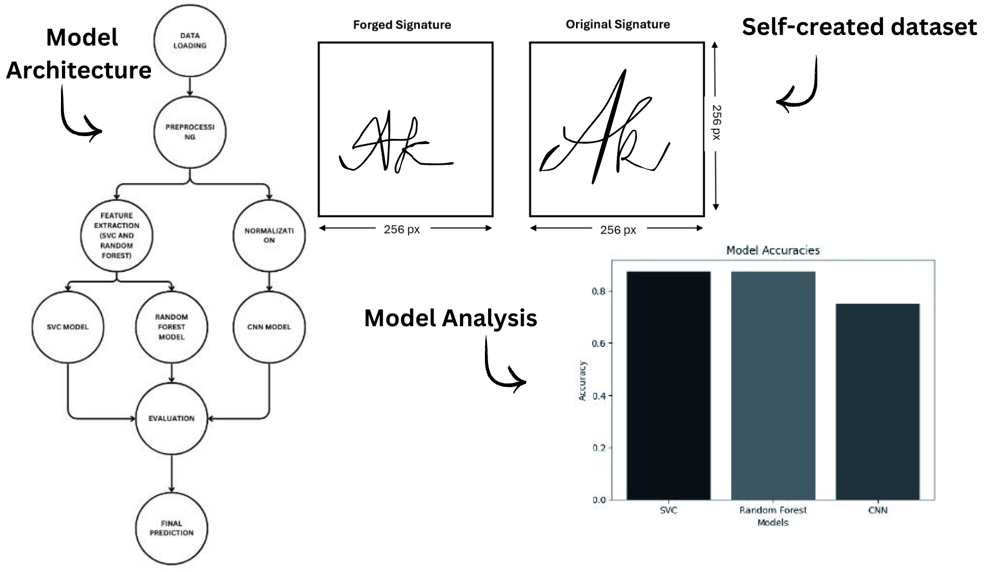
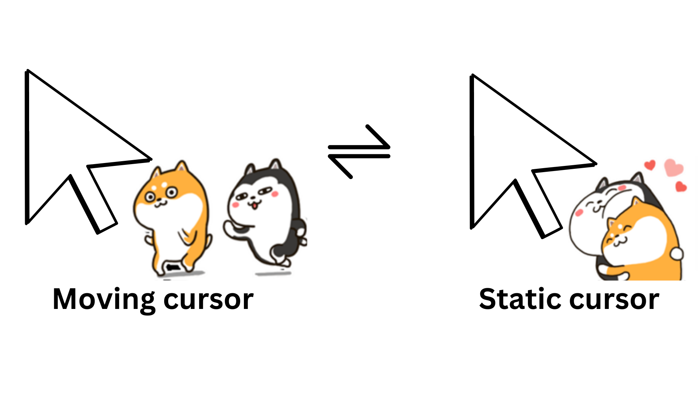

My Projects

Paris Olympics 2024 Data Engineering Project
Designed and deployed a full-scale data pipeline using Azure Data Factory, Data Lake Gen 2, and Databricks to ingest, transform, and analyze Olympic performance data. Processed datasets across 200+ events, reducing manual prep time by 60%. Built modular PySpark transformations and optimized storage layers to support real-time medal analytics.
Payment System Application
Developed a Python-based web app with integrated Stripe API for real-time payment processing and secure user authentication. Implemented JWT-based login flow, client-side input validation, and server-side error handling to ensure data integrity. Tested edge cases for fraud detection and deployed on Render with persistent PostgreSQL backing.

British Airways Data Analysis Project
Analyzed 1000+ customer reviews and operational logs using SQL and Tableau to uncover the top three recurring complaint drivers. Built an interactive dashboard with dynamic filters and KPIs to explore route-specific feedback trends. Correlated complaints with NPS scores and flight delay frequencies, enabling actionable insights for performance improvements.

Runway Inspection Model and Geospatial Analysis
Built a computer vision model using OpenCV and Haar cascades to detect runway surface anomalies from aerial drone footage. Achieved 92% classification accuracy across a dataset of 5,000 labeled frames. Integrated GPS telemetry and IMU data to geolocate anomalies with <30cm precision for real-time mapping and safety intervention.

Forged Signature Detection System
Created a signature verification system using a Siamese neural network in Python, trained on a self-built dataset with both genuine and forged samples. Achieved 87% validation accuracy. Simulated edge distortions and forgery scenarios to test model robustness, enabling real-time verification workflows in document-heavy environments.

Pointer Pursuit
Developed a Tkinter-based desktop app with real-time mouse tracking and sprite animation logic using PIL. Implemented frame throttling, event-driven state switching, and asynchronous motion handling to maintain smooth visual response at sub-60ms latency. Designed as a playful UI demo with modular code structure for animation extensibility.